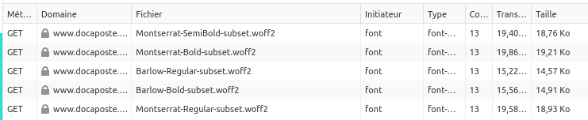

Depuis quelques années, l’utilisation de polices de caractères sur le web a explosé (aussi bien en nombre de polices existantes que de sites y ayant recours).
Comme souvent, le Web Almanac est une mine d’informations, notamment via le chapitre dédié aux polices. On y apprend notamment que les deux principaux fournisseurs de polices web sont Google puis Font Awesome, cette dernière consistant en la mise à disposition d’icônes. Au-delà du coût potentiel sur la performance et les impacts environnementaux, certains pays ont déjà établi que ceci pouvait contrevenir au RGPD (Règlement Général sur la Protection des données).

Voyons désormais quelles bonnes pratiques peuvent permettre de réduire l’impact des polices de caractères sur le web.
Référentiels existants
Les polices sont mentionnées dans la famille UX/UI du RGESN (Référentiel Général d’écoconception de services numériques) :
- 4.10 – Le service numérique utilise-t-il majoritairement des polices de caractères du système d’exploitation ?
On les retrouve également dans le GR491 (Guide de référence de conception responsable de services numériques) :
- Limitez-vous le nombre de fonts chargées?
- Privilégiez-vous les polices système?
- Le nombre de polices de caractères (fonts) et les variantes de polices appelées (graisse, caractères utilisés dans le projet) sont-ils limités ?
Enfin, les 115 bonnes pratiques d’écoconception web les mentionnent également :
Bonnes pratiques
Objectifs
Afin de réduire les impacts des polices de caractères, plusieurs bonnes pratiques sont applicables :
- Privilégier les polices standard/système : ainsi, on évite des requêtes supplémentaires
- Utiliser un format de compression optimal (aujourd’hui, il s’agit du format WOFF2). Des outils en ligne comme Everything Fonts peuvent assurer cette conversion.
- Limiter le nombre de variantes utilisées ou privilégier une police variable
- Ne charger que les caractères réellement utilisés (par exemple via un subset)
Quand ?
Ces bonnes pratiques doivent intervenir dès la conception visuelle du service afin de privilégier les polices standard autant que possible. Si ce n’est pas possible, limiter alors le nombre de variantes à charger. Enfin, lorsque les polices sont intégrées, privilégier le format woff2, les polices variables et s’assurer de ne charger que les caractères ou langues réellement utilisés.
Facilité de mise en œuvre
Si le site est déjà en ligne, il peut être compliqué de modifier la police utilisée. En revanche, les optimisations techniques sont faciles à mettre en œuvre (format, police variable, Subset).
Gains estimés
Ces bonnes pratiques permettent de diminuer le nombre de requêtes HTTP ainsi que le volume de données transférées.
Cas particuliers
Google Fonts
Afin d’éviter les problèmes avec le RGPD, il est recommandé d’héberger les polices Google soi-même.
Si des versions variables ne sont pas disponibles pour toutes, certains créateurs proposent ces versions gratuitement. En complément, l’API Google permet directement de créer un Subset avec une requête de ce type : https://fonts.googleapis.com/css?family=Montserrat&subset=latin
Icônes
Les polices d’icônes sont plutôt répandues. Les utiliser directement peut impliquer de charger de nombreuses icônes qui ne seront pas forcément utilisées. Le mieux dans le cas des icônes est d’utiliser directement chacune d’entre elles au format SVG. Sous cette forme, elles peuvent être intégrées directement dans le HTML (sans requête HTTP supplémentaire). Si une police d’icônes doit être conservée pour des raisons pratiques, limiter le fichier aux icônes réellement utilisées.
Cas d’étude
Dans le cadre de l’accompagnement des équipes de Docaposte pour leur site institutionnel, les polices de caractères constituent comme souvent un chantier à part entière.
Les polices utilisées ici sont deux Google Fonts : Montserrat et Barlow. Le site étant déjà en ligne, il est compliqué d’imposer le recours à des polices standard.
Afin d’éviter de contrevenir au RGPD mais aussi pour améliorer la performance du site, les polices sont hébergées directement sur les serveurs de Docaposte. Dans un second temps, la mise en place d’un sous-domaine dédié pourrait permettre de s’affranchir des cookies.
L’intégration sous la forme d’une police variable nécessite quelques ajustements supplémentaires, notamment au niveau des feuilles de style. En attendant, il a été décidé d’appliquer deux bonnes pratiques :
- Proposer les fichiers au format woff2 plutôt que woff
- Le site n’étant proposé qu’en français et en anglais, un Subset a été créé ne conservant que l’alphabet Latin.

Requêtes initiales

Requêtes après Subset et conversion au format woff2
Le format woff2 offre une compression supérieure en moyenne de 30% par rapport au format woff et encore plus par rapport à d’autres formats comme ttf.
Ce changement de format, combiné au Subset, a permis de faire passer le poids total des polices d’un peu plus de 400 ko à un peu moins de 90 ko soit une réduction de 78% environ.
Aller plus loin
- Best practices for fonts : survol des différentes bonnes pratiques liées aux polices de caractères, principalement dans l’optique d’améliorer la performance d’un site web
- Introduction to optimising web fonts : astuces et outils pour l’optimisation des polices des caractères
- Reduce web font size : différentes stratégies d’optimisation
- Wakamaifondue : un outil gratuit en ligne pour analyser ce qui se trouve dans un fichier de police de caractères
- Font Subsetter : un outil gratuit et en ligne pour limiter le nombre de caractères dans le fichier d’une police.
- Unicode range subsetting : une approche du Subset se basant directement sur l’unicode afin de ne conserver que les caractères vraiment utilisés.
- Self-hosting explained (including Google Fonts) : comment héberger soi-même des polices de caractères